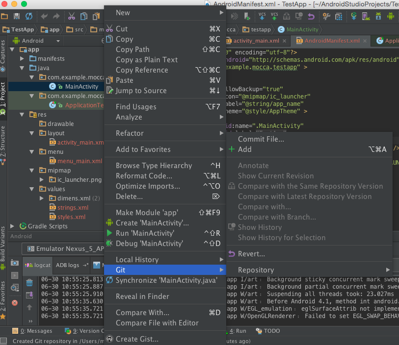
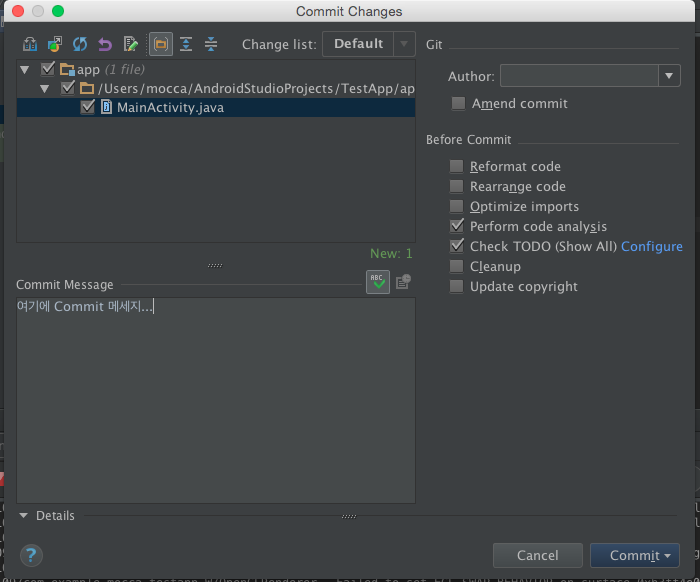
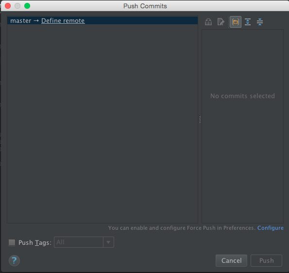
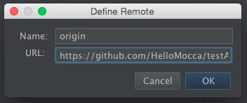
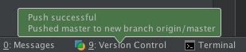
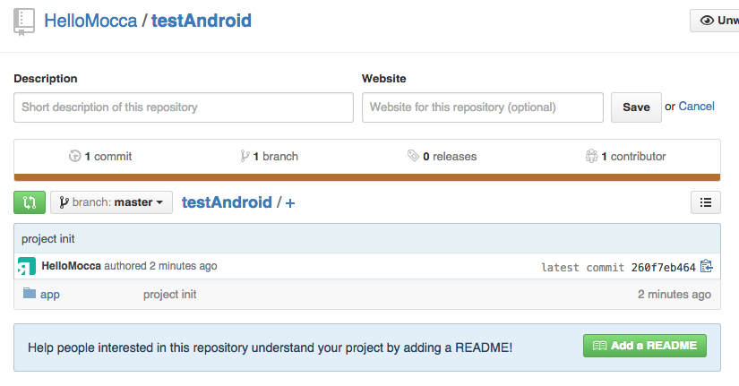

Android Studio에서 Git 사용하기
Step 1: Git이 설치되어 있는지 확인
[ Command + , ] 로 Preferences 창으로 이동하고 'Version Control'에서 'Git'을 선택한다.
Path to Git executable 에 Git이 설치된 디렉토리를 지정하고 오른쪽에 'Test'버튼을 클릭하면 Git실행이 정상적으로 이루어지는지 테스트 할 수 있다.
테스트가 정상적으로 이루어지지 않는다면 경로를 다시 살펴보거나 Git이 설치되어있는지 확인한다.
Step 2: 현재 안드로이드 프로젝트를 Git 저장소로 지정
"VCS"메뉴에 Enable Version Control Integration 이 있다.
"Git"을 선택하고 실행하면 'Create Git repository in ...' 메세지가 뜨면서 현재 프로젝트 디렉토리가 Git 저장소가 되면서 오른쪽의 파일이름이
붉은색(Untracked)이 된 것을 볼 수 있다."
Step 3: 저장소에 추가(add)
이제 파일을 오른쪽 클릭하면 메뉴에 "Git"항목이 보이는 것을 확인할 수 있다.
Git 메뉴에서 "Add"를 클릭하여 현재 파일의 이름이 녹색으로 변하면서 Git 저장소에 추가할 수 있다. 현재 프로젝트의 전체 파일을 Add 하려면 프로젝트를 오른쪽 클릭하여 Git메뉴의 Add를 선택하면 된다.
Step 3: Commit!
Commit은 Git 메뉴에서 Commit File... 을 선택하거나 [ Command + K ] 로 할 수 있다. Commit 메세지를 작성하고 Commit 을 진행하자!
Step 4: Push
Push는 VCS -> Git -> Push 를 선택하거나 [ Command + Shift + K ] 로 실행할 수 있다. 아직 원격저장소가 지정이 되어있지 않다면 원격저장소를 지정해 줄 필요가 있다. 'Define Remote' 를 클릭하면 Remote를 설정하는 창이 뜬다.
 Remote 저장소를 설정하고 Push를 진행한 후 아래 완료 메세지까지 뜨면 성공!
 